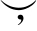

家璧先生：
今天翻翻良友公司所出的书，想起了一件事——
书的每行的头上，倘是圈，点，虚线，括弧的下半（

）的时候，是很不好看的。我先前做校对人的那时，想了一种方法，就是在上一行里，分嵌四个“四开”，那么，就有一个字挤到下一行去，好看得多了。不知可以告知贵处校对先生，以供采择否？此请著祺。
鲁迅 上 二月六夜
330206 致赵家璧
第12卷 · 一九三三年
家璧先生：
今天翻翻良友公司所出的书，想起了一件事——
书的每行的头上，倘是圈，点，虚线，括弧的下半（

）的时候，是很不好看的。我先前做校对人的那时，想了一种方法，就是在上一行里，分嵌四个“四开”，那么，就有一个字挤到下一行去，好看得多了。不知可以告知贵处校对先生，以供采择否？此请著祺。
鲁迅 上 二月六夜